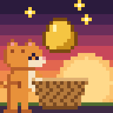

コケっとキャッチ
ビルの屋上のニワトリが産んだ卵を、カゴで受け止めるゲーム
サポート
よくある質問
- Q. カゴの動かし方を変えたい
- タイトル画面の「せってい」で、「かたむき」（スマホを左右に傾ける）と「タッチ」（画面を指で左右になぞる）を切り替えられます。ベストスコアとランキングは、操作の方法ごとに別々です。
- Q. 傾けてもカゴがうまく動きません
- 「せってい」の「かたむき」で、持ちやすい傾きのまま「ここを まんなかにする」を押すと、その傾きが真ん中になります。「かんど」で敏感さを、「左右をはんてん」で向きを変えられます。
- Q. 金の卵・腐った卵とは？
- キラキラ光る金の卵を受け止めると、点数とライフが増えます（ライフが満タンのときは点数が多めに入ります）。緑色の腐った卵を受け止めるとライフが減るので、よけてください。腐った卵と金の卵は、落としてもライフは減りません。
- Q. 新しいキャラクターを使いたい
- ベストスコアが 100 点・300 点・600 点になると、カゴを持つ仲間（いぬ・うさぎ・ひよこ）がふえます。「せってい」で選べます。
- Q. ランキングに載りません
- iPhone の「設定」→「Game Center」でサインインしていると、ゲームが終わったときにスコアが送られます。0 点は送りません。
- Q. 機種変更でデータを引き継げますか
- 本アプリには引き継ぎの機能はありません。iPhone の iCloud バックアップから新しい端末を復元した場合は、データが戻ることがあります。
- Q. 音を消したい
- 「せってい」の「おと」で、効果音と BGM をそれぞれオフにできます。
お問い合わせ
不具合のご報告・ご要望・ご質問は、下記のお問い合わせフォームからお送りください。返信までお時間をいただくことがあります。
お使いの端末（例: iPhone 15）を書き添えていただけると助かります。
お問い合わせフォームを開く（Google フォーム）
プライバシーポリシー
制定日：2026年11月17日
「コケっとキャッチ」（以下「本アプリ」）は、ビルの屋上のニワトリが産んだ卵を、カゴで受け止めるゲームです。本アプリにおける利用者の情報の取り扱いについて、以下のとおり定めます。
1. 本アプリのデータ
本アプリで遊んだ記録は、利用者の端末の中だけに保存されます。開発者がこれらの情報を受け取ることはありません。
- ベストスコア（操作の方法ごと）、選んだキャラクター
- アプリの設定（操作の方法、傾きの感度・向き、効果音・BGM のオン/オフ）
本アプリにはログインやアカウントの登録はなく、名前やメールアドレスなどの個人情報を入力する場所もありません。
2. ランキング（Game Center）について
iPhone では、Apple の「Game Center」にサインインしている場合、ゲームが終わったときのスコアを Game Center のランキングに送ります。ランキングには、Game Center のニックネームとスコアが表示されます。これらは Apple が管理するもので、開発者が利用者個人を特定できる形で受け取ることはありません。
Game Center にサインインしていなくても、本アプリはすべての機能を使えます（ランキングには載りません）。Game Center の設定は、iPhone の「設定」→「Game Center」から変えられます。
3. 広告について
本アプリは、Google LLC が提供する広告配信サービス「Google AdMob」を利用して、次の広告を表示します。
- タイトル画面とゲームオーバー画面の下のバナー広告
- 何回か遊んだあと、ゲームオーバーのときに表示される全画面の広告
広告の配信のために、Google が次のような情報を自動で取得することがあります。
- 端末の識別子（広告 ID など）、IP アドレス、おおまかな位置（IP アドレスから推定されるもの）
- 広告の表示・タップの状況、アプリの動作状況（クラッシュの情報など）
これらの情報は Google が取得・管理するもので、開発者が利用者個人を特定できる形で受け取ることはありません。本アプリで遊んだ記録が、広告のために送られることはありません。
iPhone では、広告を始める前に、利用者に合った広告のために端末の識別子を使ってよいかをたずねる画面（トラッキングの許可）を表示します。許可しなくても、本アプリはすべての機能を使えます（利用者に合わせない広告が表示されます）。選んだ内容は、iPhone の「設定」→「プライバシーとセキュリティ」→「トラッキング」から変えられます。
同意が必要な地域の利用者には、広告を始める前に同意の確認画面を表示します。
- Google による情報の取り扱い：https://policies.google.com/technologies/partner-sites
- 広告のカスタマイズは、端末の設定（iPhone：「設定」→「プライバシーとセキュリティ」→「Apple の広告」）から管理できます。
4. 端末の機能の利用
本アプリは、端末の傾き（モーションセンサー）を、カゴを動かすためだけに使います。傾きの情報は保存も送信もしません。
カメラ・写真・位置情報・連絡先・通知などの端末の機能は使いません。
5. バックアップ
端末のバックアップ機能（iPhone の iCloud バックアップ）により、本アプリのデータが利用者のアカウントにバックアップされることがあります。これは Apple が提供する機能で、端末の設定から管理できます。本アプリ自体には、データを別の端末に引き継ぐ機能はありません。
6. データの削除
本アプリを削除（アンインストール）すると、端末内に保存されたデータはすべて削除されます。Game Center のランキングの記録は、Apple の Game Center の設定から管理できます。
7. 改定
本ポリシーを改定する場合は、本ページでお知らせします。
8. お問い合わせ
本アプリに関するお問い合わせは、お問い合わせフォーム（Google フォーム）からご連絡ください。フォームに入力された内容は、お問い合わせへの対応と本アプリの改善のためだけに使います。
開発者：TONTON